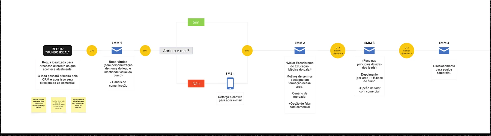
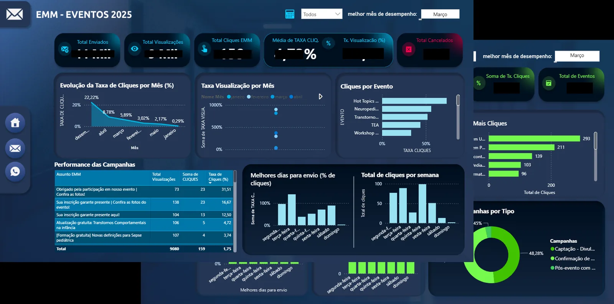

DE DISPAROS
A JORNADAS.
Estruturação e operação de jornadas de e-mail e CRM multicanal para captação e nutrição de leads. O trabalho foi transformar disparos avulsos em uma régua que reage ao comportamento do lead — do primeiro contato à matrícula — e tornar a operação mensurável.
Contexto
Captação por muitos canais, relacionamento sem régua.
A instituição captava leads de pós-graduação e educação continuada por múltiplos canais, mas a comunicação com essas bases não tinha uma régua estruturada. O relacionamento dependia de disparos avulsos, sem uma jornada que nutrisse o lead do primeiro contato até a matrícula — e sem continuidade depois dela.
Problema
Disparos avulsos, sem nutrição nem mensuração.
- Baixa abertura e ausência de nutrição estruturada dos leads.
- Leitura de resultado feita apenas por planilhas, sem consolidação.
- Peças de e-mail com baixo desempenho.
- Falta de alinhamento entre CRM e Comercial.
- Inexistência de nutrição pós-matrícula — o relacionamento parava na conversão.
Meu papel
Da peça à performance: operar o CRM ponta a ponta.
- Construção das peças de e-mail em HTML modular.
- Montagem e disparo das jornadas no Salesforce.
- Estruturação das réguas de comunicação com o time.
- Leitura de performance e apresentação de resultados via dashboard.
- Ponte entre CRM e Comercial.
Processo
De disparos isolados a uma régua que reage ao comportamento.
A régua de boas-vindas atendia todos os leads com personalização de nome. A partir dela, a jornada se ramificava por comportamento: o gatilho “abriu o e-mail?” definia o próximo passo — quem abria seguia na nutrição; quem não abria recebia um SMS de reforço e reconvite.
Régua inicial com personalização de nome.
“Abriu o e-mail?” define o próximo passo.
Sequência que aquece o lead progressivamente.
Envio do formulário e matrícula.

Decisões
As escolhas que estruturaram a operação.
Disparos avulsos viram jornada que reage à abertura.
Canal recorrente de relacionamento com a base.
Fluxo de compra com recuperação, conectando CRM e conversão.
Da planilha para Power BI, com hierarquia de métricas.
Assunto e CTA testados como prática contínua.
Abertura → leitura → clique como padrão de análise.
Entregas
O que ficou de concreto.
- Réguas de comunicação para captação e nutrição.
- Peças de e-mail em HTML modular, reutilizáveis.
- Jornadas automatizadas no Salesforce, com ramificação por comportamento.
- Newsletter como canal recorrente.
- Cursos com checkout e recuperação de carrinho.
- Dashboard de performance (Power BI) no lugar da planilha.

Impacto
De disparo avulso a operação mensurável.
Disparos avulsos para toda a base · sem nutrição estruturada · leitura por planilha · CRM e Comercial desalinhados.
Régua estruturada e mensurável · ramificação por comportamento · dashboard contínuo · CRM e Comercial coordenados pela jornada.
Aprendizado
O que ficou.
- Régua que reage a comportamento converte melhor do que volume de disparo.
- Mensuração consolidada muda a conversa: decisão deixa de ser opinião e vira leitura de dado.
- A maior parte do ganho veio de estruturar o que já existia disperso, não de adicionar complexidade.